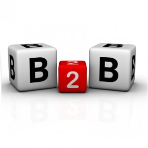
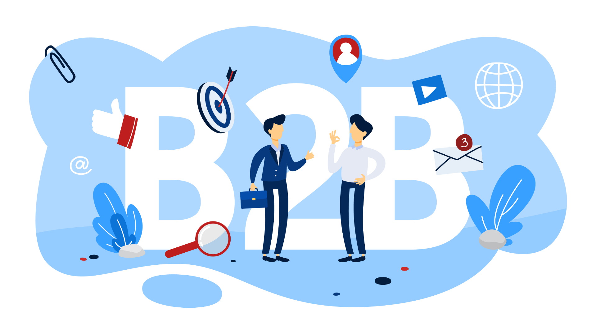
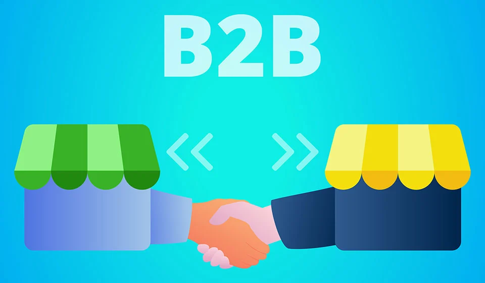

PRINCIPAL
B2C
B2E
C2C
B2G
C2G
ECOMMERCE DE PRODUCTOS DIGITALES
ECOMMERCE DE INFOPRODUCTOS
ECOMMERCE DE SERVICIOS
ECOMMERCE SOFTWARE AS A SERVICE (SAAS)
ECOMMERCE OPEN SOURCE
B2B
BUSINESS-TO-BUSINESS(B2B)
El B2B es el acrónimo de business to business,
que se refiere a los modelos de negocio en los
que las transacciones de bienes o la prestación
de servicios se producen entre dos empresas
(particulares o no), por tanto, se relaciona
principalmente con el comercio mayorista, aunque
también puede referirse a prestación de servicios
y consumo de contenidos.
Paul Hague, Nick Hague y Matthew Harrison,
autores de B2B Marketing: What Makes it
Special lo definen como:
“conocer las necesidades de otros negocios,
pero sabiendo que al final, la demanda de los
productos hechos por éstos, terminará
siendo usado por consumidores particulares
en sus casas”, un hecho que hay que tomar
en cuenta para la estrategia de mercadotecnia.


